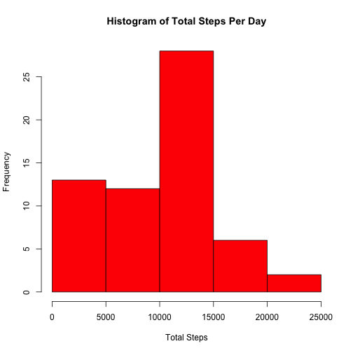
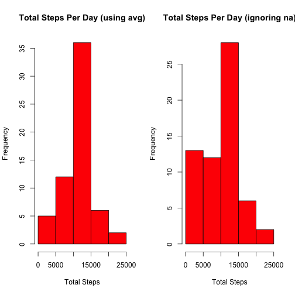
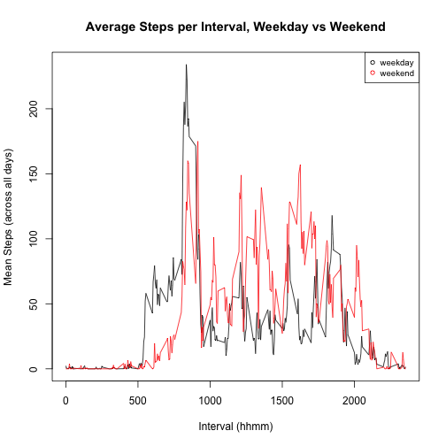

It is now possible to collect a large amount of data about personal movement using activity monitoring devices such as a Fitbit, Nike Fuelband, or Jawbone Up. These type of devices are part of the "quantified self" movement -- a group of enthusiasts who take measurements about themselves regularly to improve their health, to find patterns in their behavior, or because they are tech geeks. But these data remain under-utilized both because the raw data are hard to obtain and there is a lack of statistical methods and software for processing and interpreting the data.
This assignment makes use of data from a personal activity monitoring device. This device collects data at 5 minute intervals through out the day. The data consists of two months of data from an anonymous individual collected during the months of October and November, 2012 and include the number of steps taken in 5 minute intervals each day.
The data for this assignment can be downloaded from the course web site:
The variables included in this dataset are:
steps: Number of steps taking in a 5-minute interval (missing
values are coded as NA)
date: The date on which the measurement was taken in YYYY-MM-DD format
interval: Identifier for the 5-minute interval in which measurement was taken
The dataset is stored in a comma-separated-value (CSV) file and there are a total of 17,568 observations in this dataset.
In this step, we simply unzip the included activity.zip file and read it into the variable data using the following script:
unzip("activity.zip")
data <- read.csv("activity.csv")
and then look at a summary of the data we've imported:
summary(data)
## steps date interval
## Min. : 0.0 2012-10-01: 288 Min. : 0
## 1st Qu.: 0.0 2012-10-02: 288 1st Qu.: 589
## Median : 0.0 2012-10-03: 288 Median :1178
## Mean : 37.4 2012-10-04: 288 Mean :1178
## 3rd Qu.: 12.0 2012-10-05: 288 3rd Qu.:1766
## Max. :806.0 2012-10-06: 288 Max. :2355
## NA's :2304 (Other) :15840
From the above summary, we can see that there are 288 rows per date, since the data was recorded at 5 minute intervals. In order to tell the mean per day, we'll need to first transform the data.
In this step, we'll combine the data for each date by summing steps per date, leaving NA values out, and dropping the interval column. We'll use the dplyr package to perform this transformation.
library(dplyr)
data.by.day <- data %.%
group_by(date) %.%
summarize(steps=sum(steps, na.rm = TRUE))
We'll first take a look at a histogram to get some idea of where the mean may lie:
hist(data.by.day$steps, freq=TRUE, xlab = "Total Steps", ylab="Frequency", main="Histogram of Total Steps Per Day", col="red")

And then run a summary of the data to inspect further:
summary(data.by.day)
## date steps
## 2012-10-01: 1 Min. : 0
## 2012-10-02: 1 1st Qu.: 6778
## 2012-10-03: 1 Median :10395
## 2012-10-04: 1 Mean : 9354
## 2012-10-05: 1 3rd Qu.:12811
## 2012-10-06: 1 Max. :21194
## (Other) :55
We can see here by inspection that the mean number of steps per day is 9354 and the median is 10395, and can also see that each of these matches nicely with what we could have inferred from the histogram.
To answer this question we'd like to make a time series plot with the 5-minute interval on the x-axis, and the average number of steps taken, averaged across all days, on the y-axis.
This means collapsing the data table on interval, rather than date, and seeing how it pans out. Once again, we'll use dplyr here:
data.by.interval <- data %.%
group_by(interval) %.%
summarize(steps=mean(steps, na.rm = TRUE))
plot(data.by.interval$interval,
data.by.interval$steps,
type="l",
xlab="Interval (hhmm)",
ylab="Mean Steps (across all days)",
main="Average Steps per Interval")
To determine which 5-minute interval, on average across all the days in the dataset, contains the maximum number of steps, we'll inspect the data further.
The interval which contains the most steps on average is:
data.by.interval[data.by.interval$steps==max(data.by.interval$steps),]$interval
## [1] 835
and the corresponding average number of steps is:
floor(data.by.interval[data.by.interval$steps==max(data.by.interval$steps),]$steps)
## [1] 206
First we'll calculate and report the total number of missing values in the original dataset (i.e. the total number of rows with NAs):
nrow(data[!complete.cases(data),])
## [1] 2304
Next, we will test the effects of using the mean/median for the corresponding 5-minute interval to fill the na values that set.
We'll do this by creating a new dataset that is equal to the original dataset but with the missing data filled in:
data.filled <- data
data.filled <- merge(data.filled, data.by.interval, by="interval", suffixes = c("", ".avg"))
data.filled[is.na(data.filled$steps),]$steps <- data.filled[is.na(data.filled$steps),]$steps.avg
We now want to make a histogram of the total number of steps taken each day and calculate and report the mean and median total number of steps taken per day, in order to see whether these values differ from the estimates from the first part of the assignment. The goal here is to assess the impact of imputing missing data on the estimates of the total daily number of steps.
data.filled.by.day <- data.filled %.%
group_by(date) %.%
summarize(steps=sum(steps, na.rm = TRUE))
par(mfrow=c(1,2))
hist(data.filled.by.day$steps, freq=TRUE, xlab = "Total Steps", ylab="Frequency", main="Total Steps Per Day (using avg)", col="red")
hist(data.by.day$steps, freq=TRUE, xlab = "Total Steps", ylab="Frequency", main="Total Steps Per Day (ignoring na)", col="red")

We'll also take a look at the summary of this data:
summary(data.by.day$steps)
## Min. 1st Qu. Median Mean 3rd Qu. Max.
## 0 6780 10400 9350 12800 21200
We can see here by inspection that the mean number of steps per day is now 10766 where before it was 9354. The median is now 10766, where before it was 10395.
As we can see, this method of imputing data had a significant effect in changing the mean and median (further investigation beyond this assignment is needed to say why this is concusively), as well as changing the overall distribution. Ideally, the replacement values would not only count on the average for that interval, but would also be weighted by the day's average to account for variance across days.
To explore this question, we'll first create a new factor variable in the dataset with two levels – “weekday” and “weekend” indicating whether a given date is a weekday or weekend day.
data$day.of.week <- weekdays(as.Date(data$date))
data$day.type <- factor(ifelse(data$day.of.week == "Sunday" | data$day.of.week == "Saturday", "weekend", "weekday"))
Next we'll make a panel plot similar to the one we made previsouly, containing a time series plot (i.e. type = "l") of the 5-minute interval (x-axis) and the average number of steps taken, averaged across all weekday days or weekend days (y-axis).
data.with.day.of.week.by.interval <- data %.%
group_by(interval, day.type) %.%
summarize(steps=mean(steps, na.rm = TRUE))
par(mfrow=c(1,1))
plot(data.with.day.of.week.by.interval[data.with.day.of.week.by.interval$day.typ =="weekday",]$interval,
data.with.day.of.week.by.interval[data.with.day.of.week.by.interval$day.typ =="weekday",]$steps,
type="l",
xlab="Interval (hhmm)",
ylab="Mean Steps (across all days)",
main="Average Steps per Interval, Weekday vs Weekend",
col="black")
lines(data.with.day.of.week.by.interval[data.with.day.of.week.by.interval$day.typ =="weekend",]$interval,
data.with.day.of.week.by.interval[data.with.day.of.week.by.interval$day.typ =="weekend",]$steps,
type="l",
col="red")
legend('topright', legend = levels(data.with.day.of.week.by.interval$day.type), col = 1:3, cex = 0.8, pch = 1)

From the chart, there are some clear differences in weekday patterns vs weekends. Weekdays have a higher volume of steps starting earlier in the morning, and then drop off relative to weekends during the day, then spike back up toward the end of the day. Weekend steps volume also continues later into the evening. Presumably, the weekday pattern is due to "rush hour" foot traffic and not going out in the evenings as frequently as on weekends, but further investigation would be necessary to determine this conclusively.
While this was not part of the assignment, it is somewhat interesting to inspect, and since I've accidentally done the work for it I'll include it here as a footnote.
In order to do this chart we need to perform three minor transformations:
lubridate libraryNA values in the steps columnlibrary(lubridate)
data$time.of.day <- sprintf("%04d",data$interval)
data$time.of.day <- paste(substr(data$time.of.day,0,2),":",substr(data$time.of.day,3,4),":","00", sep="")
data$abs.interval <- ymd_hms(paste(data$date, data$time.of.day))
data.without.na <- data[!is.na(data$steps),]
data.without.na$steps.running.avg <- cumsum(data.without.na$steps)/1:length(data.without.na$steps)
Now, we can plot:
plot(data.without.na$abs.interval, data.without.na$steps.running.avg, type="l")